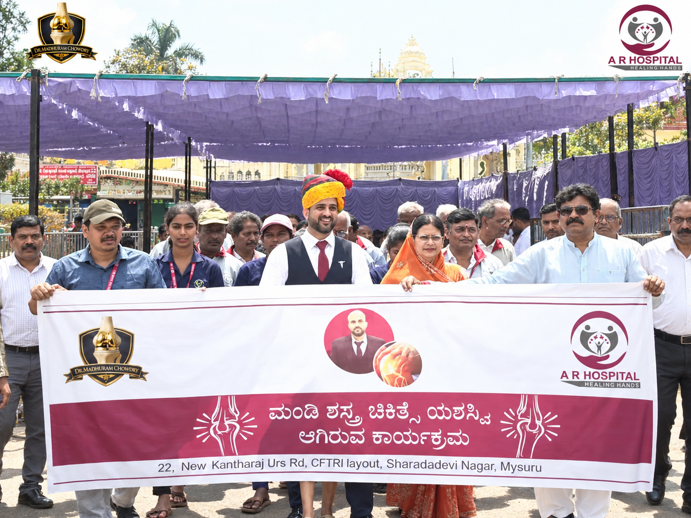
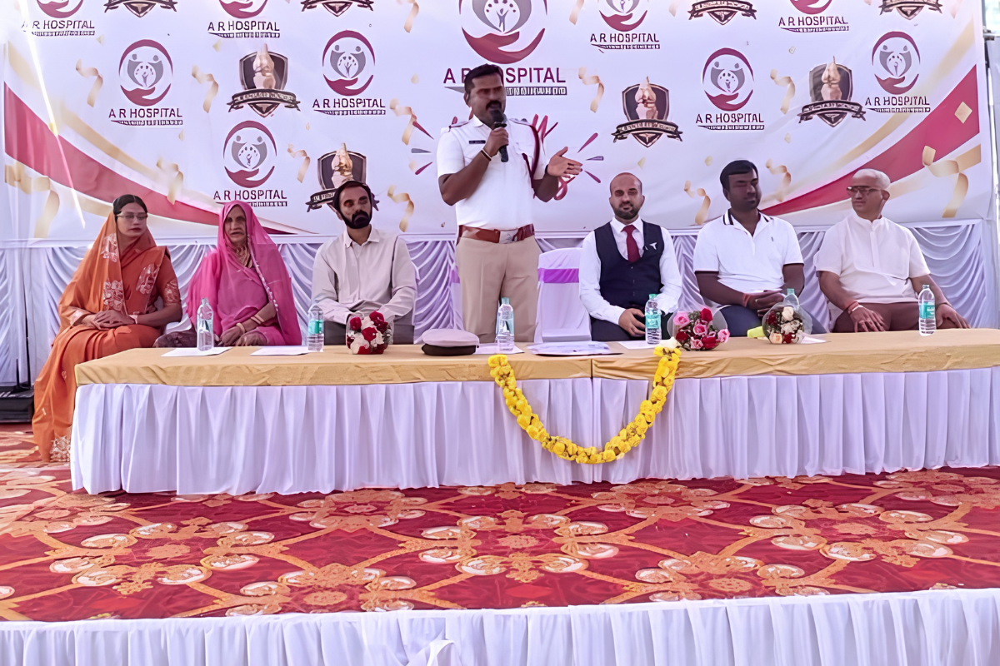
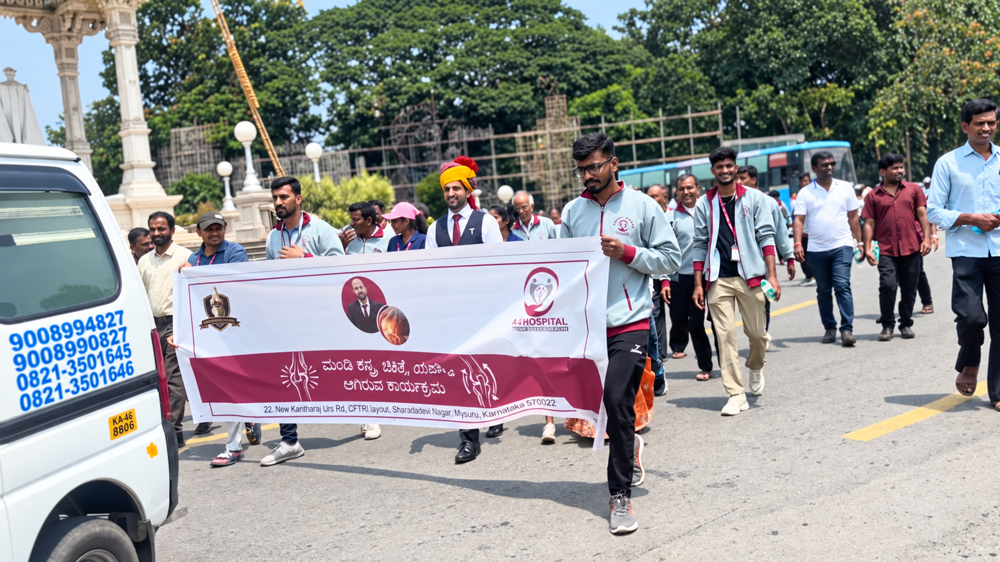
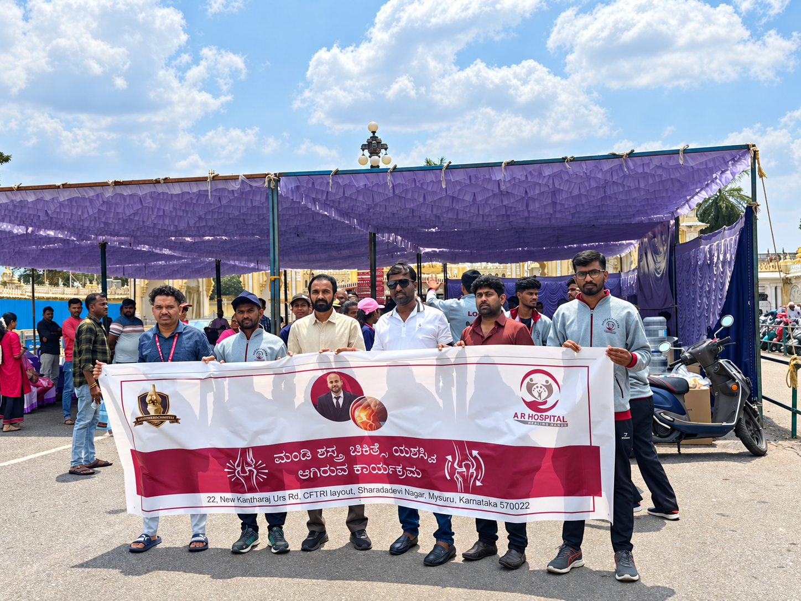

A R Hospital, Mysore, celebrated its 4th anniversary with the Happy Knees Walkathon on October 2, 2026, bringing together patients who had undergone knee surgery at the hospital under the care of Dr. Madhuram Chowdry. The event focused on knee health awareness, recovery, mobility and the importance of an active lifestyle.
Recovery is more than successfully completing a medical procedure. It is about regaining confidence, returning to everyday activities and being able to move forward with greater comfort and independence.
With this thought at the heart of its 4th anniversary celebrations, A R Hospital, Mysore, organised the “Happy Knees Walkathon” on October 2, 2026.
The event brought together patients who had undergone knee surgery at A R Hospital, along with doctors, hospital representatives and other participants, to celebrate their journey towards better mobility and an active life.
More than an anniversary celebration, the Happy Knees Walkathon in Mysore created an opportunity to bring patients together and highlight an important message about knee health: recovery does not end with treatment. Continued care, rehabilitation, movement and an active lifestyle are also important parts of the journey.
What Was the Happy Knees Walkathon?
The Happy Knees Walkathon was organised as part of A R Hospital's 4th anniversary celebrations.
The event was held at Kote Anjaneya Temple, behind Mysore Palace, Mysore, with the programme beginning at 11:00 AM.
At the centre of the event were patients who had successfully undergone knee surgery at A R Hospital. Their participation gave the programme a special significance, as the event became an opportunity to celebrate their recovery and mobility.
The idea behind Happy Knees went beyond simply organising a walk. Walking became a symbol of movement, confidence and the journey towards an active lifestyle.
For people who have experienced knee problems, everyday activities such as walking can sometimes become difficult. Bringing together patients who had undergone knee surgery provided an opportunity to celebrate their continued journey and participation in everyday life.

A Celebration of Recovery and Mobility
One of the most meaningful aspects of the Happy Knees event in Mysore was the participation of patients who had undergone knee surgery at A R Hospital under the care of Dr. Madhuram Chowdry.
The patients shared a common experience of dealing with knee-related problems, seeking medical care and going through treatment.
The event provided an opportunity for them to come together outside the usual hospital setting and participate in a shared experience.
Their presence turned the Happy Knees Walkathon into more than a health awareness programme. It became a celebration of their individual journeys and their continued progress towards better mobility.
The event also brought patients, doctors, hospital representatives and other participants together in an atmosphere of enthusiasm and positivity.
Why Was Happy Knees Started?
The Happy Knees initiative focuses on creating awareness about knee health and encouraging people to think about prevention and care.
Speaking to the press in Kannada, Dr. Madhuram Chowdry, Consultant Orthopedic and Joint Replacement Surgeon at A R Hospital, spoke about changing lifestyles and their possible impact on knee health.
He highlighted how previous generations often had more physically active daily routines, while modern lifestyles can involve less physical activity and changes in dietary habits.
He also spoke about the relationship between weight and stress on the knee joints. Excess body weight can place additional load on the knees and may contribute to increased wear and tear over time.
The broader message behind the initiative is that knee health deserves attention before problems become severe.
Moving From Treatment Towards Prevention
A key message behind Happy Knees is the importance of prevention and awareness.
When patients develop knee problems, treatment can vary depending on the underlying condition and its severity. Medical management may include medication, injections, physiotherapy or surgical treatment when appropriate.
However, Dr. Madhuram Chowdry highlighted that healthcare discussions often focus heavily on treating problems after they have already developed.
The Happy Knees initiative aims to bring more attention to the other side of the conversation — how people can understand their knee health and take appropriate steps to care for their joints before major problems arise.
This includes greater awareness about lifestyle, physical activity, diet, weight and seeking medical guidance when persistent knee symptoms affect everyday life.
Medical Awareness and Patient Guidance
The Happy Knees Walkathon also included a medical awareness and guidance session led by Dr. Madhuram Chowdry.
During the programme, he shared information with patients and participants about knee health and recovery.
The discussion covered several important areas, including:
- Knee arthritis and its progression
- Available treatment options (non-surgical and surgical)
- Lifestyle changes to safeguard joint cartilage
- Surgical treatment innovations such as robotic knee replacement
- Diet and nutrition for joint health
- Post-surgery care protocols
- The importance of physiotherapy in rebuilding strength and motion
The objective of the session was to help patients better understand how appropriate treatment, rehabilitation and an active lifestyle can support mobility and quality of life.
By combining medical education with patient participation, the event created an opportunity for people to learn about knee care while also celebrating recovery.

From Recovery to Mobility
Following the medical awareness and patient guidance session, participants took part in the Happy Knees Walkathon.
The walk began at Kote Anjaneya Temple, behind Mysore Palace, and proceeded towards Dodda Gadiyara Circle.
The walk represented the journey from pain and limited mobility towards recovery, confidence and an active lifestyle.
For patients who had previously experienced difficulties because of knee problems, participating in a walkathon carried a special meaning.
It was an opportunity to come together, take part in an activity and celebrate their journey.
The walk also created a visible message for the wider community about the importance of mobility and staying active.

🎥 Watch the Happy Knees Walkathon Highlights
Take a look at the highlights from the Happy Knees Walkathon, where A R Hospital patients, doctors and team members came together to celebrate recovery, mobility and an active life.
Watch on Instagram →Patients at the Heart of the Event
The Happy Knees Walkathon placed patients at the centre of the celebration.
While the event was organised as part of A R Hospital's 4th anniversary, the focus remained on the people whose healthcare journeys were connected with the hospital.
The participation of knee surgery patients made the event particularly meaningful.
They came together not simply as former patients, but as participants in an initiative focused on mobility, awareness and active living.
The gathering also created an opportunity for patients to interact with one another and with members of the hospital team.
This sense of community was an important part of the event.
The Importance of Post-Surgery Care
The event also highlighted the importance of post-surgery care and physiotherapy.
Knee surgery is one part of a patient's treatment journey. What follows can also be important in helping patients understand their recovery, follow appropriate medical advice and gradually return to their everyday activities.
The Happy Knees programme addressed post-surgery care and physiotherapy as part of its patient guidance session.
The focus was therefore not only on the surgical procedure but on the larger journey of recovery.
This patient-focused approach reflects the idea that healthcare should continue beyond the operating room.
Dr. Madhuram Chowdry's Message on Recovery
“Recovery is not just about successfully completing surgery. It is also about helping patients regain their confidence, move freely and enjoy their daily lives with happiness.”
This message captures the spirit of the Happy Knees Walkathon.
The event was not focused solely on surgery or medical procedures. Instead, it highlighted what comes after treatment — the patient's ability to regain confidence, participate in activities and continue with everyday life.
The walkathon provided a simple but powerful representation of this idea.
Celebrating Four Years of A R Hospital
The Happy Knees Walkathon on October 2, 2026, was organised as part of A R Hospital's 4th anniversary celebrations.
An anniversary is naturally a time to look back at the journey of an organisation. For A R Hospital, the occasion also provided an opportunity to celebrate with its patients.
By bringing together knee surgery patients for the Happy Knees initiative, the hospital connected its anniversary celebration with patient experiences and community health awareness.
The event reflected a celebration not only of the hospital's journey but also of the journeys of the patients who have been part of it.
More Than a Walkathon
The Happy Knees Walkathon was more than a single-day event.
It created an opportunity to start conversations about knee health, prevention, treatment, rehabilitation and active living.
Knee health awareness can encourage people to pay attention to persistent symptoms and seek appropriate professional guidance instead of ignoring ongoing problems.
It can also encourage individuals to think about lifestyle habits that support overall joint health.
At the same time, the participation of patients who had undergone knee surgery demonstrated the importance of looking beyond the procedure itself and recognising the broader journey of recovery.
A Shared Celebration of Better Movement
As patients, doctors, hospital representatives and other participants came together, the event created an atmosphere of enthusiasm and positivity.
The gathering from the event captured this sense of togetherness.
Patients who had undergone knee surgery stood alongside members of the A R Hospital team, creating a shared celebration of recovery and mobility.
For the patients, it was an opportunity to participate and celebrate their journey.
For the hospital, it was an opportunity to mark four years of its journey together with its patients.
And for the community, it was a reminder of the importance of awareness, appropriate treatment, rehabilitation and an active lifestyle.

A R Hospital's Commitment to Patient Care
A R Hospital focuses on patient care, advanced treatment approaches and individual medical guidance. Its stated approach includes supporting patients through treatment, surgery, rehabilitation and post-treatment care.
The Happy Knees initiative reflects this broader approach to patient care.
From understanding knee problems and available treatment options to focusing on rehabilitation and continued activity, the patient's journey can involve multiple stages.
The event brought these different aspects together in a community-focused programme.
Happy Knees: A Step Towards an Active Life
The Happy Knees Walkathon in Mysore, held on October 2, 2026, was ultimately a celebration of movement, recovery and community.
As part of A R Hospital's 4th anniversary celebrations, the event brought together patients who had undergone knee surgery, doctors, hospital representatives and other participants.
The walk from Kote Anjaneya Temple towards Dodda Gadiyara Circle represented more than a physical journey. It reflected the journey from pain and limited mobility towards recovery, confidence and an active lifestyle.
Knee health deserves attention before problems become severe. Recovery deserves support beyond surgery. And staying active can be an important part of a healthier life.
For A R Hospital, celebrating its 4th anniversary through Happy Knees made the occasion especially meaningful.
It was a celebration of the hospital's journey, but more importantly, a celebration of the patients and their journeys.
Happy Knees was a celebration of recovery, mobility, confidence and the joy of moving forward.
Frequently Asked Questions
The Happy Knees Walkathon is a knee health awareness and recovery-focused event organized by A R Hospital in Mysore as part of its 4th anniversary celebrations. It brought together knee surgery patients, doctors, hospital staff and other participants to celebrate recovery, mobility and an active lifestyle.
The Happy Knees Walkathon was held on October 2, 2026, at Kote Anjaneya Temple, behind Mysore Palace, Mysore. The walkathon began at the temple and proceeded towards Dodda Gadiyara Circle.
The event included patients who had undergone knee surgery at A R Hospital under Dr. Madhuram Chowdry, along with doctors, hospital representatives and other participants.
The initiative aimed to create awareness about knee health, prevention of knee problems, recovery after treatment and the importance of an active lifestyle. It also highlighted that recovery involves more than treatment—it includes regaining confidence, mobility and quality of life.
The awareness session covered topics including knee arthritis, treatment options, lifestyle changes, diet, surgical treatment, post-surgery care and physiotherapy. The goal was to help patients better understand knee care and the role of rehabilitation in improving mobility.